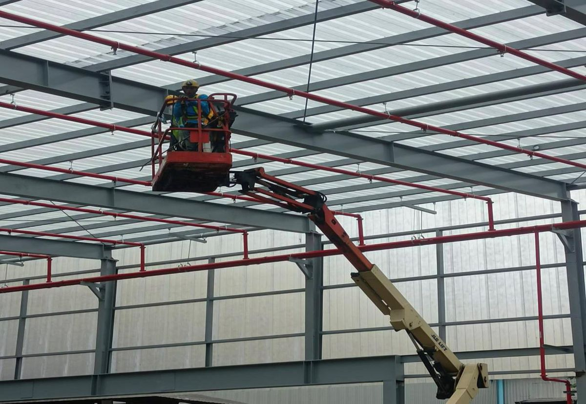
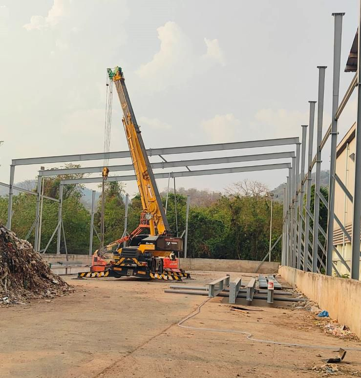
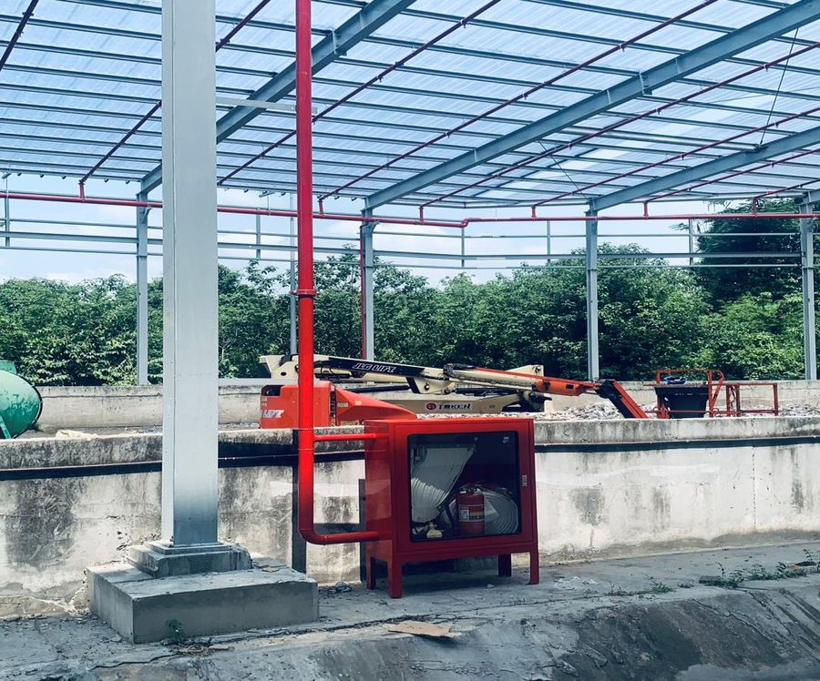

INSEE ECO CYCLE · สระบุรี
New Solar Drying Storage Building at Solid Platform
ก่อสร้างอาคารโรงตากแห้งพลังงานแสงอาทิตย์แบบครบวงจร ตั้งแต่งานฐานรากจนส่งมอบพร้อมใช้งาน
- งานฐานราก โครงสร้างเหล็ก และหลังคาโปร่งแสง
- งานระบบดับเพลิง (Fire Protection) พร้อมตู้ปั๊ม
- งานระบบไฟฟ้าและแสงสว่าง